上个周末，香港举行“区议会选举”。结果如何，大伙儿应该都知道了。今天发篇博文闲聊一下——既为了抹黑党国，也顺便普及一下香港政坛的背景知识。
前几天，某读者建议俺系统性介绍一下香港的政治制度。今天借这篇博文的机会，先扫盲一下“区议会选举”。在本文后续章节，也会简单聊聊“立法会选举”＆“特首选举”。
今后如果有空，俺再单独写一篇，系统性介绍香港的政治体系，及其历史变迁。
另外，本文中涉及到的很多名词/术语，俺都添加了相关的【维基百科链接】，以方便大伙儿进一步阅读。
目前，香港分为18个行政区，地图如下。行政区的数量与范围并不固定——历史上，因为人口流动，曾经拆分/合并过行政区，也调整过行政区的边界。
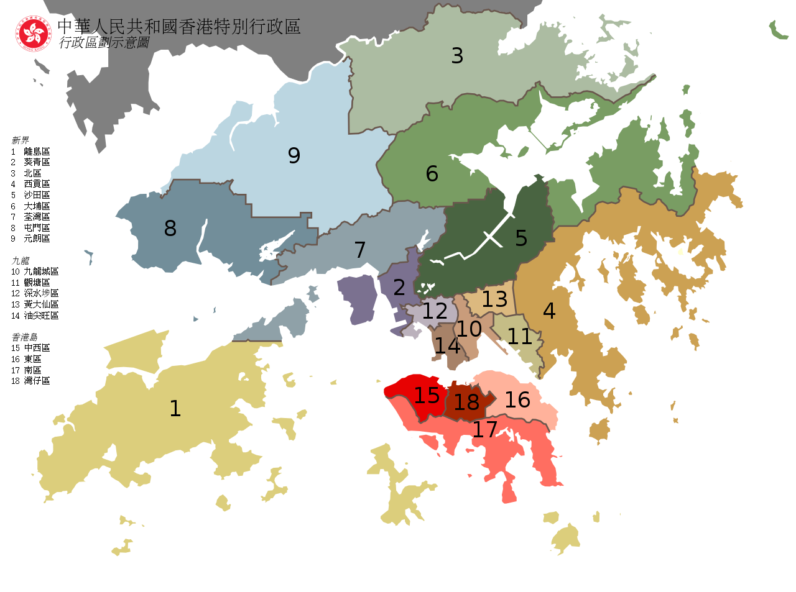
（18区地图。图片来源：维基百科）
香港“区议会”的洋文称作“District Council”；而“立法会”的洋文称作“Legislative Council”。很多人可能搞不太清楚这两者的差别。所以俺先来说一下：
【职权】的差异
“立法会”面向【整个香港】，顾名思义，具有“立法权”。除此之外，还有：控制“公共开支＆政府预算”，批准“终审法院法官＆高等法院首席法官”的任命......
“区议会”主要面向【社区】，并且更多的是【咨询】的性质。相比“立法会”而言，它的职能【小】很多。比如说“公共开支”由“立法会”控制，而“区议会”在拿到拨款之后，负责具体的落实。
在“社区事务”方面，“区议会议员”具有少量管理职能，能参与某些公共设施（体育场馆、公共图书馆、社区会堂...）的管理事务。
【人数】的差异
“区议会”的席位总数每届都有变化。1997之后，通常在 400~600 之间波动；
“立法会”的席位总数相对比较固定。97回归之后“立法会”设 60 个席位；在2012年改革为 70 个席位。
【选举方式】的差异
大部分“区议会议员”由【基层选区】的选民直接选举，每个选民只能投票给本选区的候选人。另外还有少数【当然议员】（后面会提到）。
而“立法会议员”分两种——“直选议员”与“功能界别议员”，各占一半（各35席）。“直选”比较好理解（与其它国家类似）；“功能界别”（又叫“功能组别”）的选举比较复杂——根据行业划分出20多个组别，选民根据自己所属的某个组别，投票给该组别的候选议员。这个玩意儿【暗藏许多猫腻】，感兴趣的同学可以先去看维基百科的“这个链接”。
某些好奇的同学会问：干嘛不让全体立法会议员都直选？为啥要搞出这么个“功能界别”的东东？
当然啦，“真理部＆港府”会告诉你一大堆冠冕堂皇的理由（比如它们会说“这是英国佬遗留下来滴”，还会说“这能具有更广泛的代表性”......）。总之，它们能把这些理由说得天花乱坠，把你忽悠得一愣一愣的。
但【最本质的原因】其实很简单——【功能界别】有利于朝廷更好地控制“立法会”。自1997之后，“立法会”总是“建制派”占据多数。就算支持“民主派”的选民【更多】，但在立法会选举之后，“建制派”也总能控制 50% 以上的立法会席位。此中之奥妙，就在这个玄而又玄的“功能界别制度”（在本文后续章节，俺还会再聊到这个东东）。
很多欧美民主国家都订立“关于政党的法律”（政党法）；但香港一直【没有】政党法。到目前为止，香港所有的政治组织，要么没有登记，要么以“公司 or 社团”的方式登记（参照《香港公司条例》或《社团条例》）。
由于这个缘故，俺在本文后续章节中，会经常提到【党团】一词。
除了上述特殊之处，香港另一个特别的地方在于——《基本法》规定：特首【不能】隶属政党。如果某政党的成员要想成为特首，需要先“退党”。
从这点而言，香港【不存在】严格意义上的“执政党”。
通俗地说，“建制派”就是“亲共派”。当然啦，它们口头上不会承认这点。
香港的建制派，有挺长的历史渊源——自从大陆沦陷后，中共就开始在香港扶植【亲共势力】。经过几十年的演变，如今的“建制派”有好几种成分，大致如下：
该组织成立于1948年9月（也就是大陆即将沦陷之时）。中共利用该组织渗透到香港工人运动。大伙儿请注意：中共是搞【工运】起家滴，所以捏，“渗透工运”对朝廷而言那是驾轻就熟。
顺便跑题一下：
1967年发生的“六七暴动”就是由工联会一手策划滴。那年是【文革】第二年，内地红卫兵武斗闹得正欢。“工联会”的头头（杨光）想要效仿内地的红卫兵，结果搞出了英国统治香港以来，最大规模的暴动。期间有51人死亡（包括5名香港警察，5名香港边防警察）。
香港商业电台的主持人林彬因为批评暴动人士，被“工联会”的人在马路上放火烧死（其堂弟林光海跟他在一起，也被烧死）；金庸（查良镛）当时任《明报》社长，因为写社论抨击文革，性命都受到威胁，以至于要暂时离开香港保命。
除了上述这个臭名昭著的“工联会”，建制派里面比较有名的，还有“民建联”。成立于1992年，如今是立法会中最大的建制派党团。民建联能够持续坐大，关键在于——它与【裆中央】保持高度一致，因此得到特区政府的大力扶植。香港民主人士一般讥讽该党为【保皇党】。
有些同学会纳闷了——既然已经有了“工联会”，为啥朝廷还要再扶植一个“民建联”捏？
大伙儿请注意“民建联”的【成立时间】（1992）。那时候，香港回归已经进入倒计时。朝廷要考虑的是——霸占香港之后，如何【执政】。而之前中共掌控的“工联会”，是以【蓝领工人】为主体的工运组织。这帮大老粗，擅长“动粗”，但【不】擅长“玩政治”。所以，朝廷才需要另起炉灶，扶植“民建联”。
前面俺提到：特首【不能】隶属任何政党，因此香港【没有】严格意义的执政党。但“民建联”总是与特区政府保持高度一致，可以视作“变相的执政党”。
话说上世纪80/90年代，香港回归日期已定。香港工商界的老板们，为了能在97之后继续发财，也需要投靠或巴结中共。所以在上世纪末/本世纪初，香港成立了若干具有【工商界背景】的党团。这帮人倒不一定相信马列的那套玩意儿。他们更多地是为了【商业利益】。朝廷方面当然也知道这点，也会以【经济利益】进行威胁利诱，使这帮人乖乖听话。
在“工商界党团”中，具有代表性的是：自由党、经民联、新民党。
所谓的“乡事派”特指：新界乡事势力。这个派系以“新界乡议局”、“新界社团联会”为主体，其成员来自新界原居民及乡郊社团组织。
说到“乡事派”，就要提到“区议会”中的【当然议员】（上一个章节有提到这个玩意儿）。所谓的【当然议员】，指的是“新界9区”中各个“乡事委员会”的主席，可以自动成为“区议会议员”。
这个制度属于历史遗留。1997之后，民主派多次要求撤销该制度，但历届特首都没有同意。其中的道理很简单——“当然议员”被新界的“乡事派”垄断，而这帮人又属于“建制派”。他们【无需选举】就可以占据区议会席位。这种好事情，朝廷显然不会放弃。
该组织的全称很长，叫“香港市民支援爱国民主运动联合会”。它是为了支持大陆的【六四民运】而成立滴。成立时间是1989年5月下旬，那时候正是六四民运的高潮。
六四屠城之后，为了帮助学生领袖逃亡，有个大名鼎鼎的“黄雀行动”，就是支联会主席司徒华发起滴。整个黄雀行动共营救了800人，当年朝廷发布《“高自联”通缉名单》，在全国范围内进行拉网式搜捕。名单上的23个学生领袖，有15人是靠“黄雀行动”才逃到海外。俺的网盘上分享了一本书《黄雀行动》，就专门讲这段经历。
一直到最近几年，“支联会”还在继续支持六四的纪念活动，比如2014年在香港开张了【六四纪念馆】。另外，在《回顾“六四”》系列的后续博文中，俺也会提到“支联会对六四民运的帮助”。
民主党成立于1990年4月（也就是“支联会”成立大约一年之际）。早期的民主党骨干，很多都是双重身份（既是“民主党党员”，又是“支联会成员”）。
香港回归（沦陷）之后的头几年（1997~2003），支持民运的党团中，“民主党”几乎是一党独大。有段时间，“民主党”甚至是立法会的第一大党。那时候说“民主派”经常指“民主党”。
如今的“民主党”，影响力没有当年那么大，有几个原因：
1、内部派系及内斗（说到【内斗】，流亡海外的“大陆民运组织”，也有这个毛病）
2、2003年“反23条”之后，涌现了很多新的民运党团，分散了“民主党”的支持者
2002~2003年的时候，董建华企图强推“基本法23条”，引爆2003年的“七一大游行”——那是回归后（沦陷后）第一次【特大示威游行】，多达50万人上街（相关介绍参见维基百科“这里”）。
在那之后，涌现出很多民主派党团。舆论/媒体开始用“泛民主派/泛民”这个词汇来指带这些党团。
为了协调“泛民”的诸多组织，（从2004年起）还搞了一个“泛民会议”（俗称“盒饭会”），在每周五的中午，各个党团代表在立法会的某个会议室碰头，一边吃午饭，一边讨论政治议题。
参与这个“盒饭会”的党团，除了上述提及的“民主党”，还包括如下（按成立时间排序）：
公民党、公专联、新民主同盟、人民力量、工党 ......
2014年的“占中运动 ＆ 雨伞运动”，俺发了好多篇《每周转载》。本博客的老读者，对那场运动应该比较熟悉。
由于那场运动的政治诉求【没有】达成，香港开始出现比原先的“泛民”【更激进】的“本土自决派”。
“本土自决派”中，有些支持“港独”，有些反对“港独”；有些与其它“泛民党团”保持【合作】关系，有些则持【敌对】关系（之所以会出现【敌对】关系，因为某些非常激进的“本土自决派”认为其它“泛民”反共不力）。
严格来讲，这些“与其它泛民敌对”的“本土自决派”，【不】应该再被称作“泛民”。他们与“泛民”的总称，只能叫做“非建制派”。
但为了打字省力，本文以下章节，俺还是以“民主派”来称呼“各种支持民运的党团”。
由于这次选举，恰逢今年的“反送中政治抗议”。很多人都把本次选举视作某种【民意测试】——看看到底有多少香港民众支持“反送中政治抗议”。
不光是“民主派”这么看，“建制派”也这么看。由于两大阵营（民主派、建制派）都很看重这次选举，某些外媒把这次选举称之为【变相的全民公投】。
投票前，双方都鼓励自己的支持者积极投票；所以，本次选举的【投票率】高达
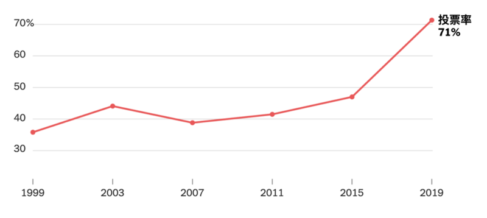
（历年来【投票率】的变化。统计图表来源：纽约时报）
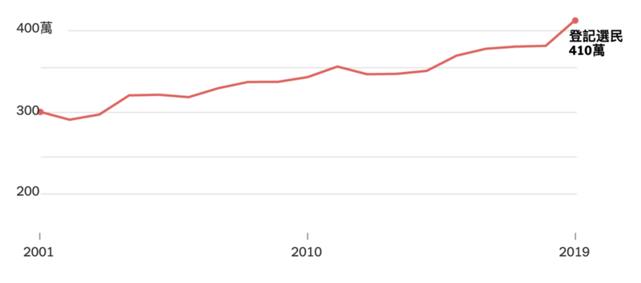
（历年来【选民登记人数】的变化。统计图表来源：纽约时报）
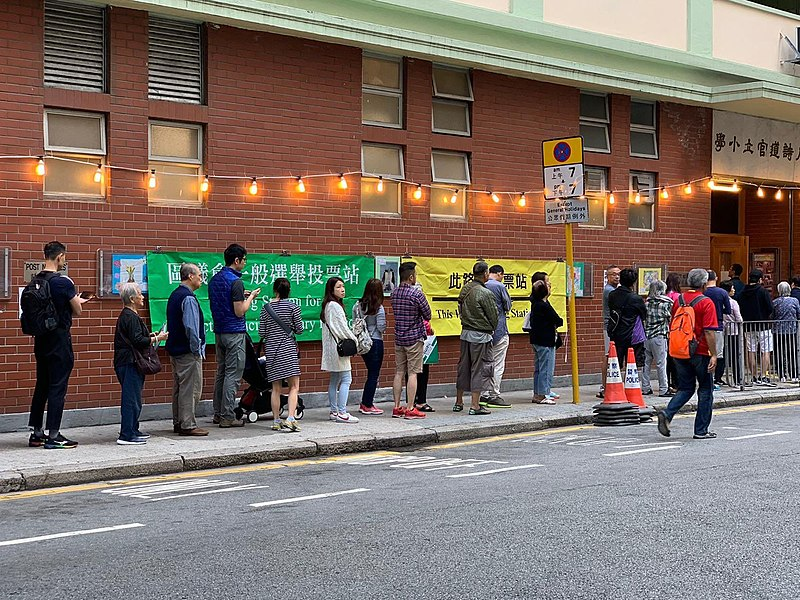
（湾仔区轩尼诗道投票站。照片来源：维基百科）
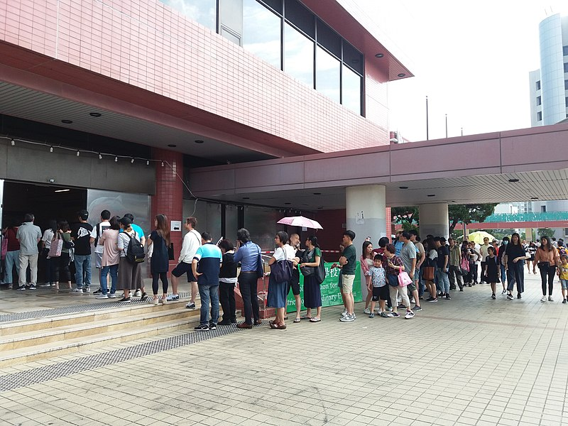
（屯门区市中心选区投票站。照片来源：维基百科）
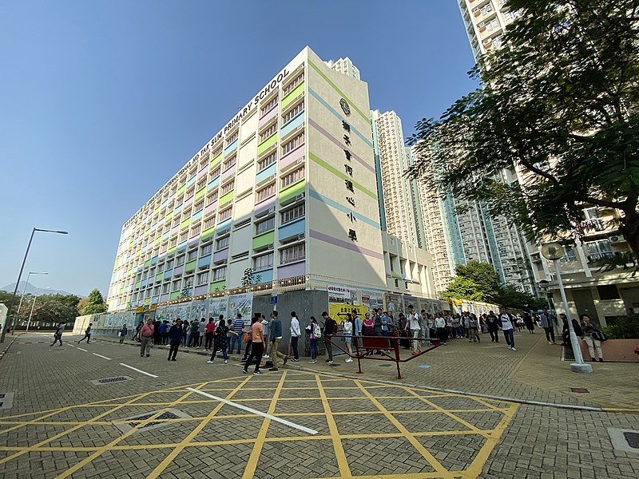
（元朗区天盛选区投票站。照片来源：维基百科）
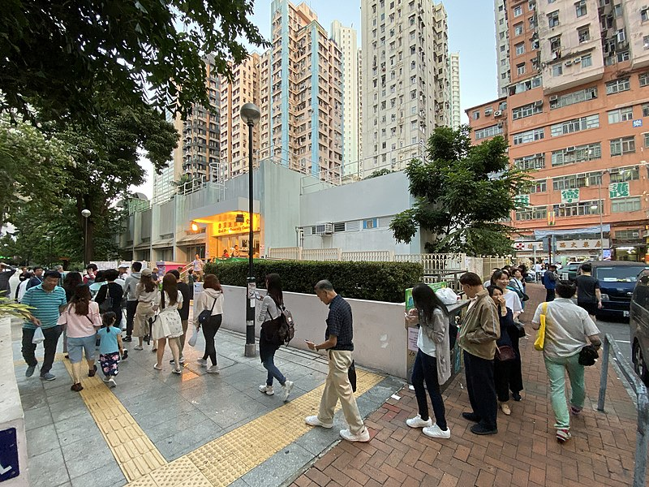
（葵青区兴芳选区投票站。照片来源：维基百科）
前面费了好多口水进行铺垫，终于说到本文的正题——本次“区议会选举”的结果。
为了加深大伙儿的印象，俺拿2015年底的选举，与今年（2019）的选举进行对比。
上届的【议席总数】
“民主派 VS 建制派”实力对比（2015选举）
（注：【新界】的9区，存在“当然议员”。所以“两派力量对比”要分列两行——
前一行表示【民选】议员数的对比，不含“当然议员”；后一行表示【总】议员数的对比，包含“当然议员”）
注：因为人口流动，各区的席位会有一些微调，具体如下：
“民主派 VS 建制派”实力对比（2019选举）
（注：【新界】的9区，存在“当然议员”。所以“两派力量对比”要分列两行——
前一行表示【民选】议员数的对比，不含“当然议员”；后一行表示【总】议员数的对比，包含“当然议员”）
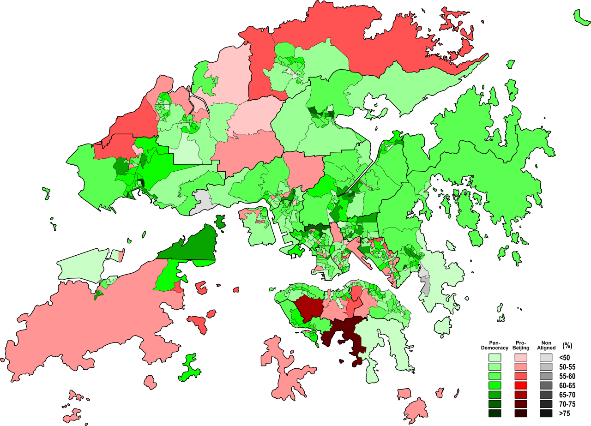
（选举地图，详细到【基层选区】。绿色表示“民主派”；红色表示“建制派”。图片来源：维基百科）
由于地图有某种【误导性】——面积大的区域，不一定人多。有人制作了如下这种“选举地图”，每个【基层选区】对应图中的一个六边形。这就可以很准确地看出此次选举中，两大阵营在不同选区的实力对比。
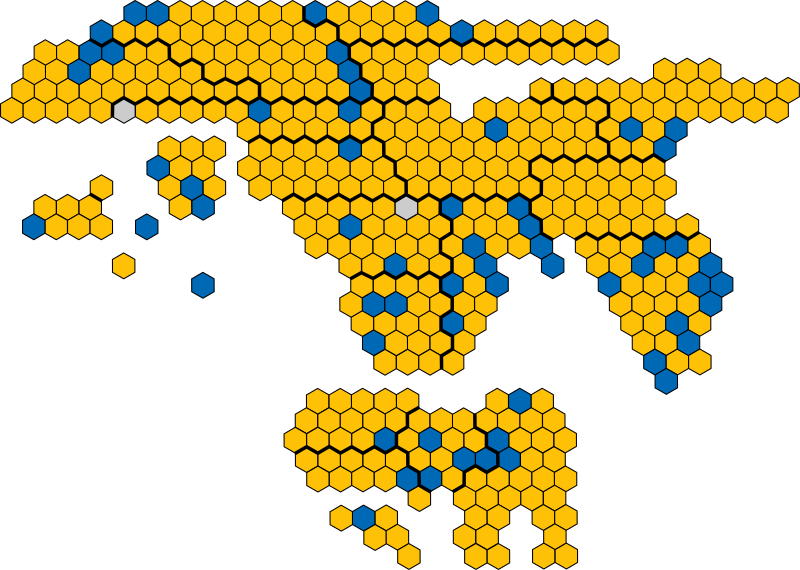
（每个选区以大小均等的六角形表示。黄色表示“民主派”；灰色表示“中间派”；蓝色表示“建制派”。图片来源：维基百科）

（【2015年】底的选举结果对比。黄色表示“民主派”；灰色表示“中间派”；蓝色表示“建制派”。图片来源：维基百科）
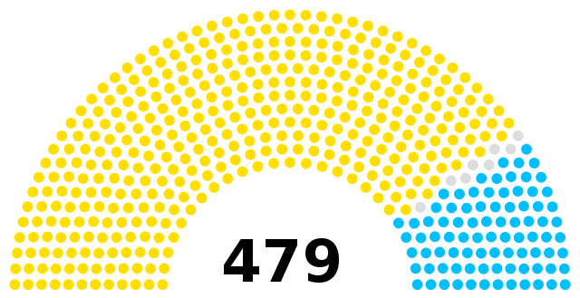
（【2019年】底的选举结果对比。黄色表示“民主派”；灰色表示“中间派”；蓝色表示“建制派”。图片来源：维基百科）
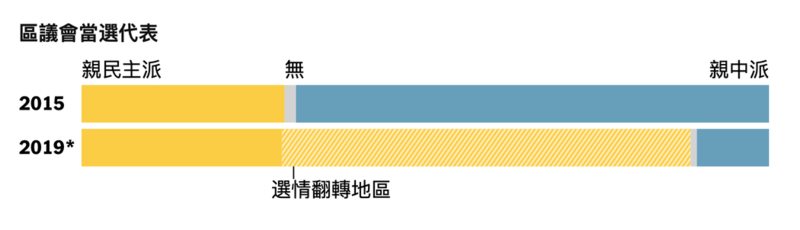
（两次区议会选举的“条状对比图”。图片来源：纽约时报）
【民主派】的候选人，很多是年轻人。其中有些甚至属于“政治素人”（首次从政）。在这些首次当选的区议员中，有很多人积极参与了近期的【反送中抗议活动】。
下面这张照片摘自《纽约时报》，其中的六人都是今年“反送中抗议活动”的积极分子。
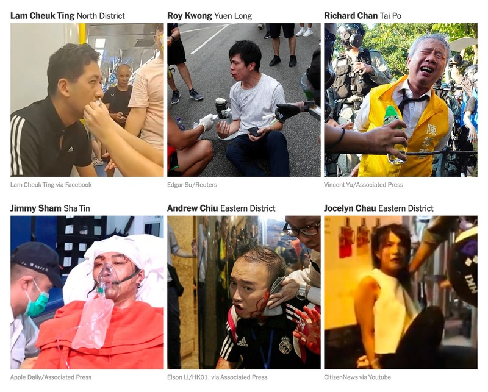
（激进参与“反送中抗议活动”的【新】当选议员。图中的6个候选人，按图片位置对应如下：
林卓廷/北区 邝俊宇/元朗 陈振哲/大埔
岑子杰/沙田 赵家贤/东区 仇栩欣/东区
照片来源：纽约时报）
与“民主派”的新人纷纷当选形成显著反差的是——很多【建制派大佬】（如下）在这次选举中【连任失败】。
另外，（本次选举后）建制派在好几个区被【剃光头】（也就是说，这几个区，【没有】任何一个建制派当选）。
早在几个月前，真理部控制的媒体（朝廷喉舌）就一直在说：今年香港的抗议活动，是【一小撮人】搞出来滴，背后有【海外敌对势力＆国际反华势力】。（注：经历过“六四”的内地民众，应该对上述说法非常耳熟 :)）
朝廷喉舌还说：大部分香港民众都反对这次抗议活动。只不过他们没有站出来。朝廷喉舌把这些人称作【沉默的大多数】。
在本次选举之前，朝廷喉舌一直在大力吆喝——让“沉默的大多数”站出来投票。并不惜采取了很多措施。
就在选举的前一天（11月23日），天朝外交部驻香港的【特派员公署】还在其 Facebook 专页播放了一段视频，由40多位香港艺人共同拍摄，呼吁香港民众——用选票对暴力活动说“不”。
很显然，这40多个戏子就是朝廷的傀儡，名单如下：
这个名单中的头两个家伙（陈小春、成龙）堪称【人渣】。成龙的名字已经臭大街了，所以俺节省点口水，单说【陈小春】——
此人是典型的“亲共分子”，曾任惠州市政协委员。他在这次选举中公然【违规】——在【投票间】内拍照（拍摄他自己的选票），并发到新浪微博。他这么干，显然想帮“建制派”拉票。但这种做法违反了香港选举法律——禁止任何人在投票站内“拍照、录音、录影”。
位于广州的“暨南大学”有很多香港留学生，朝廷方面连这些人也不放过。
经香港媒体爆料——在本次选举前，很多暨南大学的港生都被辅导员叫去【单独面谈】。辅导员可以准确地说出：该港生所在的【基层选区】，该选区对应的【建制派候选人姓名】，并且要求他们一定要投给这些【建制派候选人】。校方还承诺：可以免费提供包车往返香港，接送他们去投票。
要俺说：这就是赤裸裸地——利用公权力拉票。在成熟的民主国家，这么干是严重违法滴。看来，咱们的朝廷为了这次选举，也是豁出去了。
在投票之前，朝廷敢于放话，号召香港民众：
但选举结果如此不堪入目，这足以说明——朝廷方面【严重误判】（完全估错了形势）。
朝廷怎么会犯如此低级的错误捏？这就要聊到【习呆呆的傻逼】这个问题了。
香港的“反送中运动”，从6月份大规模升级之后，到如今已经快半年了。而港府方面的应对，堪称【一蠢再蠢】。尤其是10月初颁布的《禁蒙面法》，不但没能平息抗议活动，反而导致香港民众的抗议更激烈——这个月（11月）明显是“反送中抗议”爆发以来，最血腥的一个月（具体可参见前一篇博文，链接在“这里”）
由于众所周知的原因，处理这么重大的政治运动，林郑月娥（妖蛾子）肯定得请示北京方面。而如今朝廷的掌门人正是以【傻逼著称】的习近平。港府在应对“反送中运动”时表现出来的种种弱智，实际上也就是在暴露——习近平的弱智。
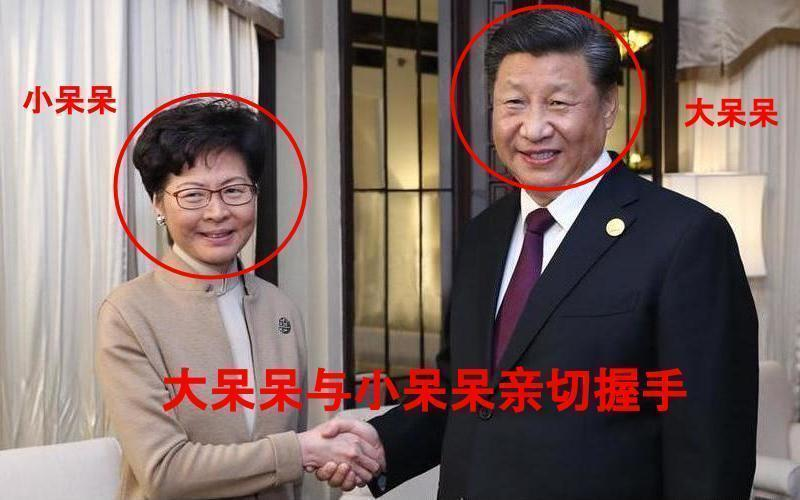
（习呆呆与妖蛾子在“上海进博会”见面，双方亲切握手）
习呆呆的傻逼，不光体现在香港方面，也体现在“中美贸易战”。具体的点评，参见去年的某篇博文《从量变到质变——中美关系40年》。
在博客上，俺喜欢把他称作“习呆呆”，但在【墙内】网络，“习呆呆”这个词肯定会遭到“真理部”的审查、屏蔽、封杀；甚至还可能引来【跨省追捕】。因此，很多天朝民众都喜欢用更隐晦的绰号——【初中生】（真理部总不能把这个词也禁掉吧？）
在今年的某个时候，俺惊讶地发现——身边某个从来不问政治、也从不翻墙的人，竟也知道这个绰号。由此可见，该绰号流传之广。这也间接表明——习的傻逼程度，得到某种【公认】 :)
估计某些五毛又要指责俺“抹黑党和国家领导人”。老实说，俺还真喜欢【抹黑】:) 为了把【抹黑】进行到底，再次贴出前几年的博文：
《每周转载：习呆呆上台五周年，糗事一箩筐》
在本文最后一个章节，简单点评一下：此次选举对未来香港政治格局的影响。
在本文开头俺提到：“立法会议员”有一半（35）属于“功能界别议员”——这些席位由28个功能界别选出。
其中有两个与“区议会”有关，分别称作“区议会第一组别”＆“区议会第二组别”。
区议会第一界别
这玩意儿设【1个】席位，由“区议会”【互选】得出。也就是说，这个席位的“被选举人”必须是“区议员”，而投票的人也必须是“区议员”。由于民主派已经在区议会占据绝对多数，可以确保下届立法会拿到该席位。
（注：从1997至今，一直是建制派控制“区议会”，以前这个席位总是被建制派拿走）
区议会第二界别
这玩意儿有【5个】席位，通过“【不】属任何功能界别的香港民众”直选。选举方式采用“名单比例代表制”，以全香港作为“单一选区”。由于整个立法会里面，只有这5个席位是全香港【跨选区、跨界别】直接选举，因此这5席也被坊间称作【超级议员】。
请注意：这【5席】也必须是“区议员”；想参与这5席的竞争，还必须得到另外15个“区议员”联合提名。
由此这次建制派惨败，在全部的479个“区议员席位”中只得到可怜【59 席】，因此，建制派想要提名这个界别的候选人，最多只能提名3人（59除以15）。这还是最理想情况——因为建制派本身也分好几个党团，相互之间【未必】能完美配合。
（注：由于【名单比例代表制】本身的规则，民主派要想全取这5席，也很难）
综上所述，因为这次区议会选举变天，有助于“民主派”更好地竞争上述两个界别的6个席位（虽然无法全取，但比上届更有利）
大伙儿可别小看这6个席位哦。立法会里面的“功能界别席位”，总共也就35个，上述6个席位已经超过六分之一啦。即使相比整个立法会的席位总数（70席），上述这6席也接近 1/10 的比例啦。
香港的特首，是由“选举委员会”选出。该委员会有1200人（在2012年之前，是800人），其组成如下：
由于这个“选举委员会”是用来【选举特首】滴，因此朝廷方面对它的构成比例进行了精心设计——又是那个蛋疼的【功能界别】——通过它，朝廷不但可以控制“立法会”的多数席位，也可以控制“选举委员会”的多数席位。
举例——就拿该委员会的“第1界别”来说事儿。
某些同学看到该界别是“工商界、金融界”，或许会【误以为】——任何香港商人都可以参选这个界别。有这种想法的读者，就属于“图样图森破”啦——完全低估朝廷的阴险程度。
实际上，普通的香港商人，根本【无法】以“工商界”的身份进入“选举委员会”的“第1界别”。要想以“工商界”身份被选入，候选人必须是“香港总商会会员”或者“香港中华总商会会员”。而这两个商会，完全是朝廷控制滴。
上述表格最后一个类别的300个席位，对应政界，由【立法会、区议会、乡事局、两会代表】瓜分。具体参见下表：
“区议会”可以分到其中的117个席位。也就是说，这117席由【区议员】选出。由于此次“区议会选举”，民主派获得【绝对多数】。下一届的“特首选举”，民主派就可以【全取】上述这117个席位。
某些外媒在本次选举后的评论中指出：由于民主派在这次“区议会选举”中大胜，下一届特首选举，（乐观情况下）民主派有望控制“选举委员会”中的大约400席。虽然还是【无法】决定最终的特首人选，但可以对“特首候选人”施加某些影响。
前面提到：这次选举，很多民主派的当选议员是【政治素人】，而且很多都是年轻人（80后90后）。这些人里面，不但有本次“反送中运动”的积极分子，也有前几年“占中运动/雨伞运动”的积极分子。这反映出——香港年轻人的参政意识比以前更强烈。
还有一个数据，也可以反映出这点。那就是：本次投票中，【年轻的】“首投族”（首次投票群体）占有相当比例。
香港的年轻选民提升参政热情，实在可喜可贺。对抗朝廷的渗透，对抗“一国两制”，希望就在他们身上。
在本文的结尾，再次贴出之前引用过的打油诗：
俺博客上，和本文相关的帖子（需翻墙）：
《每周转载：朝廷推香港版＜国安法＞，【一国一制】降临（外媒报道8篇）》
《政治常识扫盲：理清“国家、政体、公民、政府、政党”等概》
《“盛大庆典”难掩【内忧外患】——天朝沦陷70周年随想》
《从量变到质变——中美关系40年》
《每周转载：习呆呆上台五周年，糗事一箩筐》
《台湾民主运动与独立运动简史》
《每周转载：香港“反送中”政治抗议活动大事记（9月初至10月初）》
《每周转载：香港“反送中”政治抗议活动大事记（8月初至9月初）》
《每周转载：香港“反送中”政治抗议活动大事记（7月初至8月初）》
《每周转载：香港“反送中”抗议活动的外媒报道（6月9日至6月15日）》
《每周转载：香港“反送中”抗议活动的外媒报道和网友评论（6月16日至6月22日）》
《每周转载：关于香港和澳门的特首选举（外媒报道和网友评论）》
《每周转载：关于“一国两制白皮书”和“国台办言论”（大量网友评论和图片）》
《每周转载：关于香港抗议洗脑教育（网文3篇，图片多张）》
《每周转载：关于朝廷对爱国主义的忽悠（网文5篇）》
★“区议会选举”简介
前几天，某读者建议俺系统性介绍一下香港的政治制度。今天借这篇博文的机会，先扫盲一下“区议会选举”。在本文后续章节，也会简单聊聊“立法会选举”＆“特首选举”。
今后如果有空，俺再单独写一篇，系统性介绍香港的政治体系，及其历史变迁。
另外，本文中涉及到的很多名词/术语，俺都添加了相关的【维基百科链接】，以方便大伙儿进一步阅读。
◇行政分区——香港18区
目前，香港分为18个行政区，地图如下。行政区的数量与范围并不固定——历史上，因为人口流动，曾经拆分/合并过行政区，也调整过行政区的边界。
（18区地图。图片来源：维基百科）
◇“区议会”与“立法会”的差异
香港“区议会”的洋文称作“District Council”；而“立法会”的洋文称作“Legislative Council”。很多人可能搞不太清楚这两者的差别。所以俺先来说一下：
【职权】的差异
“立法会”面向【整个香港】，顾名思义，具有“立法权”。除此之外，还有：控制“公共开支＆政府预算”，批准“终审法院法官＆高等法院首席法官”的任命......
“区议会”主要面向【社区】，并且更多的是【咨询】的性质。相比“立法会”而言，它的职能【小】很多。比如说“公共开支”由“立法会”控制，而“区议会”在拿到拨款之后，负责具体的落实。
在“社区事务”方面，“区议会议员”具有少量管理职能，能参与某些公共设施（体育场馆、公共图书馆、社区会堂...）的管理事务。
【人数】的差异
“区议会”的席位总数每届都有变化。1997之后，通常在 400~600 之间波动；
“立法会”的席位总数相对比较固定。97回归之后“立法会”设 60 个席位；在2012年改革为 70 个席位。
【选举方式】的差异
大部分“区议会议员”由【基层选区】的选民直接选举，每个选民只能投票给本选区的候选人。另外还有少数【当然议员】（后面会提到）。
而“立法会议员”分两种——“直选议员”与“功能界别议员”，各占一半（各35席）。“直选”比较好理解（与其它国家类似）；“功能界别”（又叫“功能组别”）的选举比较复杂——根据行业划分出20多个组别，选民根据自己所属的某个组别，投票给该组别的候选议员。这个玩意儿【暗藏许多猫腻】，感兴趣的同学可以先去看维基百科的“这个链接”。
某些好奇的同学会问：干嘛不让全体立法会议员都直选？为啥要搞出这么个“功能界别”的东东？
当然啦，“真理部＆港府”会告诉你一大堆冠冕堂皇的理由（比如它们会说“这是英国佬遗留下来滴”，还会说“这能具有更广泛的代表性”......）。总之，它们能把这些理由说得天花乱坠，把你忽悠得一愣一愣的。
但【最本质的原因】其实很简单——【功能界别】有利于朝廷更好地控制“立法会”。自1997之后，“立法会”总是“建制派”占据多数。就算支持“民主派”的选民【更多】，但在立法会选举之后，“建制派”也总能控制 50% 以上的立法会席位。此中之奥妙，就在这个玄而又玄的“功能界别制度”（在本文后续章节，俺还会再聊到这个东东）。
★香港政党的【特殊性】
很多欧美民主国家都订立“关于政党的法律”（政党法）；但香港一直【没有】政党法。到目前为止，香港所有的政治组织，要么没有登记，要么以“公司 or 社团”的方式登记（参照《香港公司条例》或《社团条例》）。
由于这个缘故，俺在本文后续章节中，会经常提到【党团】一词。
除了上述特殊之处，香港另一个特别的地方在于——《基本法》规定：特首【不能】隶属政党。如果某政党的成员要想成为特首，需要先“退党”。
从这点而言，香港【不存在】严格意义上的“执政党”。
★“建制派”（亲共派）及其渊源
通俗地说，“建制派”就是“亲共派”。当然啦，它们口头上不会承认这点。
香港的建制派，有挺长的历史渊源——自从大陆沦陷后，中共就开始在香港扶植【亲共势力】。经过几十年的演变，如今的“建制派”有好几种成分，大致如下：
◇工联会——“建制派”的雏形
该组织成立于1948年9月（也就是大陆即将沦陷之时）。中共利用该组织渗透到香港工人运动。大伙儿请注意：中共是搞【工运】起家滴，所以捏，“渗透工运”对朝廷而言那是驾轻就熟。
顺便跑题一下：
1967年发生的“六七暴动”就是由工联会一手策划滴。那年是【文革】第二年，内地红卫兵武斗闹得正欢。“工联会”的头头（杨光）想要效仿内地的红卫兵，结果搞出了英国统治香港以来，最大规模的暴动。期间有51人死亡（包括5名香港警察，5名香港边防警察）。
香港商业电台的主持人林彬因为批评暴动人士，被“工联会”的人在马路上放火烧死（其堂弟林光海跟他在一起，也被烧死）；金庸（查良镛）当时任《明报》社长，因为写社论抨击文革，性命都受到威胁，以至于要暂时离开香港保命。
◇民建联——如今的【保皇党】
除了上述这个臭名昭著的“工联会”，建制派里面比较有名的，还有“民建联”。成立于1992年，如今是立法会中最大的建制派党团。民建联能够持续坐大，关键在于——它与【裆中央】保持高度一致，因此得到特区政府的大力扶植。香港民主人士一般讥讽该党为【保皇党】。
有些同学会纳闷了——既然已经有了“工联会”，为啥朝廷还要再扶植一个“民建联”捏？
大伙儿请注意“民建联”的【成立时间】（1992）。那时候，香港回归已经进入倒计时。朝廷要考虑的是——霸占香港之后，如何【执政】。而之前中共掌控的“工联会”，是以【蓝领工人】为主体的工运组织。这帮大老粗，擅长“动粗”，但【不】擅长“玩政治”。所以，朝廷才需要另起炉灶，扶植“民建联”。
前面俺提到：特首【不能】隶属任何政党，因此香港【没有】严格意义的执政党。但“民建联”总是与特区政府保持高度一致，可以视作“变相的执政党”。
◇若干“工商界党团”
话说上世纪80/90年代，香港回归日期已定。香港工商界的老板们，为了能在97之后继续发财，也需要投靠或巴结中共。所以在上世纪末/本世纪初，香港成立了若干具有【工商界背景】的党团。这帮人倒不一定相信马列的那套玩意儿。他们更多地是为了【商业利益】。朝廷方面当然也知道这点，也会以【经济利益】进行威胁利诱，使这帮人乖乖听话。
在“工商界党团”中，具有代表性的是：自由党、经民联、新民党。
◇乡事派
所谓的“乡事派”特指：新界乡事势力。这个派系以“新界乡议局”、“新界社团联会”为主体，其成员来自新界原居民及乡郊社团组织。
说到“乡事派”，就要提到“区议会”中的【当然议员】（上一个章节有提到这个玩意儿）。所谓的【当然议员】，指的是“新界9区”中各个“乡事委员会”的主席，可以自动成为“区议会议员”。
这个制度属于历史遗留。1997之后，民主派多次要求撤销该制度，但历届特首都没有同意。其中的道理很简单——“当然议员”被新界的“乡事派”垄断，而这帮人又属于“建制派”。他们【无需选举】就可以占据区议会席位。这种好事情，朝廷显然不会放弃。
★“民主派”（泛民派、非建制派）及其渊源
◇支联会——香港民运的雏形
该组织的全称很长，叫“香港市民支援爱国民主运动联合会”。它是为了支持大陆的【六四民运】而成立滴。成立时间是1989年5月下旬，那时候正是六四民运的高潮。
六四屠城之后，为了帮助学生领袖逃亡，有个大名鼎鼎的“黄雀行动”，就是支联会主席司徒华发起滴。整个黄雀行动共营救了800人，当年朝廷发布《“高自联”通缉名单》，在全国范围内进行拉网式搜捕。名单上的23个学生领袖，有15人是靠“黄雀行动”才逃到海外。俺的网盘上分享了一本书《黄雀行动》，就专门讲这段经历。
一直到最近几年，“支联会”还在继续支持六四的纪念活动，比如2014年在香港开张了【六四纪念馆】。另外，在《回顾“六四”》系列的后续博文中，俺也会提到“支联会对六四民运的帮助”。
◇“民主党”一党独大的格局
民主党成立于1990年4月（也就是“支联会”成立大约一年之际）。早期的民主党骨干，很多都是双重身份（既是“民主党党员”，又是“支联会成员”）。
香港回归（沦陷）之后的头几年（1997~2003），支持民运的党团中，“民主党”几乎是一党独大。有段时间，“民主党”甚至是立法会的第一大党。那时候说“民主派”经常指“民主党”。
如今的“民主党”，影响力没有当年那么大，有几个原因：
1、内部派系及内斗（说到【内斗】，流亡海外的“大陆民运组织”，也有这个毛病）
2、2003年“反23条”之后，涌现了很多新的民运党团，分散了“民主党”的支持者
◇“反23条”之后形成的【泛民格局】
2002~2003年的时候，董建华企图强推“基本法23条”，引爆2003年的“七一大游行”——那是回归后（沦陷后）第一次【特大示威游行】，多达50万人上街（相关介绍参见维基百科“这里”）。
在那之后，涌现出很多民主派党团。舆论/媒体开始用“泛民主派/泛民”这个词汇来指带这些党团。
为了协调“泛民”的诸多组织，（从2004年起）还搞了一个“泛民会议”（俗称“盒饭会”），在每周五的中午，各个党团代表在立法会的某个会议室碰头，一边吃午饭，一边讨论政治议题。
参与这个“盒饭会”的党团，除了上述提及的“民主党”，还包括如下（按成立时间排序）：
公民党、公专联、新民主同盟、人民力量、工党 ......
◇“占中运动 ＆ 雨伞革命”之后出现的【本土自决派】
2014年的“占中运动 ＆ 雨伞运动”，俺发了好多篇《每周转载》。本博客的老读者，对那场运动应该比较熟悉。
由于那场运动的政治诉求【没有】达成，香港开始出现比原先的“泛民”【更激进】的“本土自决派”。
“本土自决派”中，有些支持“港独”，有些反对“港独”；有些与其它“泛民党团”保持【合作】关系，有些则持【敌对】关系（之所以会出现【敌对】关系，因为某些非常激进的“本土自决派”认为其它“泛民”反共不力）。
严格来讲，这些“与其它泛民敌对”的“本土自决派”，【不】应该再被称作“泛民”。他们与“泛民”的总称，只能叫做“非建制派”。
但为了打字省力，本文以下章节，俺还是以“民主派”来称呼“各种支持民运的党团”。
★“反送中”背景下，变相的【全民公投】
由于这次选举，恰逢今年的“反送中政治抗议”。很多人都把本次选举视作某种【民意测试】——看看到底有多少香港民众支持“反送中政治抗议”。
不光是“民主派”这么看，“建制派”也这么看。由于两大阵营（民主派、建制派）都很看重这次选举，某些外媒把这次选举称之为【变相的全民公投】。
投票前，双方都鼓励自己的支持者积极投票；所以，本次选举的【投票率】高达
71.23%，是1997以来最高（没有之一）。而且比上一次的“区议会选举”高出 24.22% 之多。从下面这个图表，可以明显感受到：此次的投票率【猛增】。（历年来【投票率】的变化。统计图表来源：纽约时报）
（历年来【选民登记人数】的变化。统计图表来源：纽约时报）
（湾仔区轩尼诗道投票站。照片来源：维基百科）
（屯门区市中心选区投票站。照片来源：维基百科）
（元朗区天盛选区投票站。照片来源：维基百科）
（葵青区兴芳选区投票站。照片来源：维基百科）
★区议会选举结果——民主派创历史最好记录，建制派全面崩溃
前面费了好多口水进行铺垫，终于说到本文的正题——本次“区议会选举”的结果。
为了加深大伙儿的印象，俺拿2015年底的选举，与今年（2019）的选举进行对比。
◇【上届】区议会（2016~2019）
上届的【议席总数】
458＝431（民选议员）＋27（当然议员）| 香港岛4区 | 九龙5区 | ||||||||
|---|---|---|---|---|---|---|---|---|---|
| 行政区 | 中西区 | 湾仔 | 东区 | 南区 | 油尖旺 | 深水埗 | 九龙城 | 黄大仙 | 观塘 |
| 议员数 | 15 | 13 | 35 | 17 | 19 | 23 | 24 | 25 | 37 |
| 两派对比 （民主/中间/建制） | 5 / 0 / 10 | 2 / 0 / 11 | 10 / 0 / 25 | 5 / 0 / 12 | 3 / 0 / 16 | 11 / 1 / 11 | 4 / 0 / 20 | 9 / 0 / 16 | 9 / 0 / 28 |
| 新界9区 | |||||||||
| 行政区 | 离岛 | 葵青 | 荃湾 | 屯门 | 元朗 | 北区 | 大埔 | 沙田 | 西贡 |
| 【民选】议员数 | 10 | 29 | 18 | 29 | 35 | 18 | 19 | 38 | 27 |
| 两派对比 （民主/中间/建制） | 2 / 0 / 8 | 9 / 1 / 19 | 4 / 1 / 13 | 8 / 0 / 21 | 5 / 0 / 30 | 4 / 0 / 14 | 6 / 0 / 13 | 19 / 0 / 19 | 9 / 4 / 14 |
| 【当然】议员数 | 8 | 1 | 2 | 1 | 6 | 4 | 2 | 1 | 2 |
| 【总】议员数 | 18 | 30 | 20 | 30 | 41 | 22 | 21 | 39 | 29 |
| 两派对比 （民主/中间/建制） | 2 / 0 / 16 | 9 / 1 / 20 | 4 / 1 / 15 | 8 / 0 / 22 | 5 / 0 / 36 | 4 / 0 / 18 | 6 / 0 / 15 | 19 / 0 / 20 | 9 / 4 / 16 |
前一行表示【民选】议员数的对比，不含“当然议员”；后一行表示【总】议员数的对比，包含“当然议员”）
◇【下届】区议会（2020~2023）
注：因为人口流动，各区的席位会有一些微调，具体如下：
九龙城、油尖旺、荃湾——增加1席因此，本次选举的【议席总数】变为
深水埗、葵青、屯门、西贡——增加2席
观塘、沙田——增加3席
元朗——增加4席
479＝452（民选议员）＋27（当然议员）| 香港岛4区 | 九龙5区 | ||||||||
|---|---|---|---|---|---|---|---|---|---|
| 行政区 | 中西区 | 湾仔 | 东区 | 南区 | 油尖旺 | 深水埗 | 九龙城 | 黄大仙 | 观塘 |
| 议员数 | 15 | 13 | 35 | 17 | 20 | 25 | 25 | 25 | 40 |
| 两派对比 （民主/中间/建制） | 14 / 0 / 1 | 9 / 0 / 4 | 32 / 0 / 3 | 15 / 0 / 2 | 17 / 0 / 3 | 23 / 0 / 2 | 15 / 0 / 10 | 25 / 0 / 0 | 28 / 0 / 12 |
| 新界9区 | |||||||||
| 行政区 | 离岛 | 葵青 | 荃湾 | 屯门 | 元朗 | 北区 | 大埔 | 沙田 | 西贡 |
| 【民选】议员数 | 10 | 31 | 19 | 31 | 39 | 18 | 19 | 41 | 29 |
| 两派对比 （民主/中间/建制） | 7 / 0 / 3 | 27 / 0 / 4 | 15 / 1 / 3 | 28 / 0 / 3 | 33 / 0 / 6 | 15 / 0 / 3 | 19 / 0 / 0 | 40 / 0 / 1 | 26 / 3 / 0 |
| 【当然】议员数 | 8 | 1 | 2 | 1 | 6 | 4 | 2 | 1 | 2 |
| 【总】议员数 | 18 | 32 | 21 | 32 | 45 | 22 | 21 | 42 | 31 |
| 两派对比 （民主/中间/建制） | 7 / 0 / 11 | 27 / 0 / 5 | 15 / 1 / 5 | 28 / 0 / 4 | 33 / 0 / 12 | 15 / 0 / 7 | 19 / 0 / 2 | 40 / 0 / 2 | 26 / 3 / 2 |
前一行表示【民选】议员数的对比，不含“当然议员”；后一行表示【总】议员数的对比，包含“当然议员”）
（选举地图，详细到【基层选区】。绿色表示“民主派”；红色表示“建制派”。图片来源：维基百科）
由于地图有某种【误导性】——面积大的区域，不一定人多。有人制作了如下这种“选举地图”，每个【基层选区】对应图中的一个六边形。这就可以很准确地看出此次选举中，两大阵营在不同选区的实力对比。
（每个选区以大小均等的六角形表示。黄色表示“民主派”；灰色表示“中间派”；蓝色表示“建制派”。图片来源：维基百科）
◇两次选举，【统计数字】的变化
（【2015年】底的选举结果对比。黄色表示“民主派”；灰色表示“中间派”；蓝色表示“建制派”。图片来源：维基百科）
（【2019年】底的选举结果对比。黄色表示“民主派”；灰色表示“中间派”；蓝色表示“建制派”。图片来源：维基百科）
（两次区议会选举的“条状对比图”。图片来源：纽约时报）
◇两次选举，【候选人】的变化
【民主派】的候选人，很多是年轻人。其中有些甚至属于“政治素人”（首次从政）。在这些首次当选的区议员中，有很多人积极参与了近期的【反送中抗议活动】。
下面这张照片摘自《纽约时报》，其中的六人都是今年“反送中抗议活动”的积极分子。
（激进参与“反送中抗议活动”的【新】当选议员。图中的6个候选人，按图片位置对应如下：
林卓廷/北区 邝俊宇/元朗 陈振哲/大埔
岑子杰/沙田 赵家贤/东区 仇栩欣/东区
照片来源：纽约时报）
与“民主派”的新人纷纷当选形成显著反差的是——很多【建制派大佬】（如下）在这次选举中【连任失败】。
张国钧（最大建制派政党“民建联”的副主席）前面提及的【保皇党】（民建联），此次派出181人参选，只有21当选（当选率才 1/9）。反观最大的民主派（民主党），派出99人竞选，91人当选（当选率超过 90%）。反差如此之大！
田北辰（建制派政党“自由党”荣誉主席，并与叶刘淑仪创立建制派政党“新民党”）
麦美娟（建制派政党“工联会”副理事长）
何君尧（建制派大佬，曾是“立法会/区议会”双料议员。因公开发表亲共言论而臭名昭著）
周浩鼎（建制派大佬，曾是“立法会/区议会”双料议员）
刘国勋（建制派大佬，曾是“立法会/区议会”双料议员）
郑泳舜（建制派大佬，曾是“立法会/区议会”双料议员）
陆颂雄（建制派大佬，曾是“立法会/区议会”双料议员）
......
另外，（本次选举后）建制派在好几个区被【剃光头】（也就是说，这几个区，【没有】任何一个建制派当选）。
★朝廷大力吆喝，换来一记响亮的耳光
早在几个月前，真理部控制的媒体（朝廷喉舌）就一直在说：今年香港的抗议活动，是【一小撮人】搞出来滴，背后有【海外敌对势力＆国际反华势力】。（注：经历过“六四”的内地民众，应该对上述说法非常耳熟 :)）
朝廷喉舌还说：大部分香港民众都反对这次抗议活动。只不过他们没有站出来。朝廷喉舌把这些人称作【沉默的大多数】。
在本次选举之前，朝廷喉舌一直在大力吆喝——让“沉默的大多数”站出来投票。并不惜采取了很多措施。
◇利用香港艺人帮忙拉票
就在选举的前一天（11月23日），天朝外交部驻香港的【特派员公署】还在其 Facebook 专页播放了一段视频，由40多位香港艺人共同拍摄，呼吁香港民众——用选票对暴力活动说“不”。
很显然，这40多个戏子就是朝廷的傀儡，名单如下：
陈小春、成龙、王祖蓝、容祖儿、惠英红、陈雅伦、莫华伦、吴启华、肥妈、洪祖星、周海媚、陈浩民、翁虹、关礼杰、林俊贤、刘锡明、李国祥、梁烈唯（梁竞徽）、黄子扬、洪天照、莫镇贤、梁家仁、汤宝如、李霖恩、李耀景、杨明、张柏文、欧霭玲、彭敬慈、文佩玲、蔡淇俊、陈国坤、林漪娸、李美慧、吴毅将、黎瑞恩、何婉盈、黄铭健、庄思敏、庄思明、陈秀丽、颜光兴、颜仟汶、林迪安、黄竣锋、锺少雄。
这个名单中的头两个家伙（陈小春、成龙）堪称【人渣】。成龙的名字已经臭大街了，所以俺节省点口水，单说【陈小春】——
此人是典型的“亲共分子”，曾任惠州市政协委员。他在这次选举中公然【违规】——在【投票间】内拍照（拍摄他自己的选票），并发到新浪微博。他这么干，显然想帮“建制派”拉票。但这种做法违反了香港选举法律——禁止任何人在投票站内“拍照、录音、录影”。
◇利用内地高校找港生拉票
位于广州的“暨南大学”有很多香港留学生，朝廷方面连这些人也不放过。
经香港媒体爆料——在本次选举前，很多暨南大学的港生都被辅导员叫去【单独面谈】。辅导员可以准确地说出：该港生所在的【基层选区】，该选区对应的【建制派候选人姓名】，并且要求他们一定要投给这些【建制派候选人】。校方还承诺：可以免费提供包车往返香港，接送他们去投票。
要俺说：这就是赤裸裸地——利用公权力拉票。在成熟的民主国家，这么干是严重违法滴。看来，咱们的朝廷为了这次选举，也是豁出去了。
◇朝廷方面【严重误判】
在投票之前，朝廷敢于放话，号召香港民众：
用选票对暴力活动说【不】。这至少说明——朝廷方面对这次选举，还是有一定的把握。如果【裆中央】对这次选举没啥把握，应该会低调处理，而不至于如此高调。
但选举结果如此不堪入目，这足以说明——朝廷方面【严重误判】（完全估错了形势）。
朝廷怎么会犯如此低级的错误捏？这就要聊到【习呆呆的傻逼】这个问题了。
★香港事态的发展，再次凸显【习呆呆的傻逼】
香港的“反送中运动”，从6月份大规模升级之后，到如今已经快半年了。而港府方面的应对，堪称【一蠢再蠢】。尤其是10月初颁布的《禁蒙面法》，不但没能平息抗议活动，反而导致香港民众的抗议更激烈——这个月（11月）明显是“反送中抗议”爆发以来，最血腥的一个月（具体可参见前一篇博文，链接在“这里”）
由于众所周知的原因，处理这么重大的政治运动，林郑月娥（妖蛾子）肯定得请示北京方面。而如今朝廷的掌门人正是以【傻逼著称】的习近平。港府在应对“反送中运动”时表现出来的种种弱智，实际上也就是在暴露——习近平的弱智。
（习呆呆与妖蛾子在“上海进博会”见面，双方亲切握手）
习呆呆的傻逼，不光体现在香港方面，也体现在“中美贸易战”。具体的点评，参见去年的某篇博文《从量变到质变——中美关系40年》。
在博客上，俺喜欢把他称作“习呆呆”，但在【墙内】网络，“习呆呆”这个词肯定会遭到“真理部”的审查、屏蔽、封杀；甚至还可能引来【跨省追捕】。因此，很多天朝民众都喜欢用更隐晦的绰号——【初中生】（真理部总不能把这个词也禁掉吧？）
在今年的某个时候，俺惊讶地发现——身边某个从来不问政治、也从不翻墙的人，竟也知道这个绰号。由此可见，该绰号流传之广。这也间接表明——习的傻逼程度，得到某种【公认】 :)
估计某些五毛又要指责俺“抹黑党和国家领导人”。老实说，俺还真喜欢【抹黑】:) 为了把【抹黑】进行到底，再次贴出前几年的博文：
《每周转载：习呆呆上台五周年，糗事一箩筐》
★此次选举的意义——对香港政坛的影响
在本文最后一个章节，简单点评一下：此次选举对未来香港政治格局的影响。
◇对【立法会选举】影响
在本文开头俺提到：“立法会议员”有一半（35）属于“功能界别议员”——这些席位由28个功能界别选出。
其中有两个与“区议会”有关，分别称作“区议会第一组别”＆“区议会第二组别”。
区议会第一界别
这玩意儿设【1个】席位，由“区议会”【互选】得出。也就是说，这个席位的“被选举人”必须是“区议员”，而投票的人也必须是“区议员”。由于民主派已经在区议会占据绝对多数，可以确保下届立法会拿到该席位。
（注：从1997至今，一直是建制派控制“区议会”，以前这个席位总是被建制派拿走）
区议会第二界别
这玩意儿有【5个】席位，通过“【不】属任何功能界别的香港民众”直选。选举方式采用“名单比例代表制”，以全香港作为“单一选区”。由于整个立法会里面，只有这5个席位是全香港【跨选区、跨界别】直接选举，因此这5席也被坊间称作【超级议员】。
请注意：这【5席】也必须是“区议员”；想参与这5席的竞争，还必须得到另外15个“区议员”联合提名。
由此这次建制派惨败，在全部的479个“区议员席位”中只得到可怜【59 席】，因此，建制派想要提名这个界别的候选人，最多只能提名3人（59除以15）。这还是最理想情况——因为建制派本身也分好几个党团，相互之间【未必】能完美配合。
（注：由于【名单比例代表制】本身的规则，民主派要想全取这5席，也很难）
综上所述，因为这次区议会选举变天，有助于“民主派”更好地竞争上述两个界别的6个席位（虽然无法全取，但比上届更有利）
大伙儿可别小看这6个席位哦。立法会里面的“功能界别席位”，总共也就35个，上述6个席位已经超过六分之一啦。即使相比整个立法会的席位总数（70席），上述这6席也接近 1/10 的比例啦。
◇对【特首选举】的影响
香港的特首，是由“选举委员会”选出。该委员会有1200人（在2012年之前，是800人），其组成如下：
| 界别 | 席位数 | 说明 |
|---|---|---|
| 第1界别 | 300 | 工商界、金融界 |
| 第2界别 | 300 | 专业界 |
| 第3界别 | 300 | 劳工界、社会服务界、宗教界 |
| 第4界别 | 300 | 政界 |
由于这个“选举委员会”是用来【选举特首】滴，因此朝廷方面对它的构成比例进行了精心设计——又是那个蛋疼的【功能界别】——通过它，朝廷不但可以控制“立法会”的多数席位，也可以控制“选举委员会”的多数席位。
举例——就拿该委员会的“第1界别”来说事儿。
某些同学看到该界别是“工商界、金融界”，或许会【误以为】——任何香港商人都可以参选这个界别。有这种想法的读者，就属于“图样图森破”啦——完全低估朝廷的阴险程度。
实际上，普通的香港商人，根本【无法】以“工商界”的身份进入“选举委员会”的“第1界别”。要想以“工商界”身份被选入，候选人必须是“香港总商会会员”或者“香港中华总商会会员”。而这两个商会，完全是朝廷控制滴。
上述表格最后一个类别的300个席位，对应政界，由【立法会、区议会、乡事局、两会代表】瓜分。具体参见下表：
| 类型 | 席位数 | 备注 |
|---|---|---|
| 立法会议员 | 70 | |
| 【民选】区议会议员 | 【117】 | 不含“当然议员” |
| 香港籍全国人大代表 | 36 | |
| 香港籍全国政协代表 | 51 | |
| 乡事局代表 | 26 | 参见前面介绍的“乡事派” |
“区议会”可以分到其中的117个席位。也就是说，这117席由【区议员】选出。由于此次“区议会选举”，民主派获得【绝对多数】。下一届的“特首选举”，民主派就可以【全取】上述这117个席位。
某些外媒在本次选举后的评论中指出：由于民主派在这次“区议会选举”中大胜，下一届特首选举，（乐观情况下）民主派有望控制“选举委员会”中的大约400席。虽然还是【无法】决定最终的特首人选，但可以对“特首候选人”施加某些影响。
◇对【香港政治版图】的影响
前面提到：这次选举，很多民主派的当选议员是【政治素人】，而且很多都是年轻人（80后90后）。这些人里面，不但有本次“反送中运动”的积极分子，也有前几年“占中运动/雨伞运动”的积极分子。这反映出——香港年轻人的参政意识比以前更强烈。
还有一个数据，也可以反映出这点。那就是：本次投票中，【年轻的】“首投族”（首次投票群体）占有相当比例。
香港的年轻选民提升参政热情，实在可喜可贺。对抗朝廷的渗透，对抗“一国两制”，希望就在他们身上。
在本文的结尾，再次贴出之前引用过的打油诗：
台湾民众要努力啊，否则就变成香港！
香港民众要努力啊，否则就变成大陆！
大陆民众要努力啊，否则就变成朝鲜！
朝鲜民众要努力啊，否则就变成地狱！
俺博客上，和本文相关的帖子（需翻墙）：
《每周转载：朝廷推香港版＜国安法＞，【一国一制】降临（外媒报道8篇）》
《政治常识扫盲：理清“国家、政体、公民、政府、政党”等概》
《“盛大庆典”难掩【内忧外患】——天朝沦陷70周年随想》
《从量变到质变——中美关系40年》
《每周转载：习呆呆上台五周年，糗事一箩筐》
《台湾民主运动与独立运动简史》
《每周转载：香港“反送中”政治抗议活动大事记（9月初至10月初）》
《每周转载：香港“反送中”政治抗议活动大事记（8月初至9月初）》
《每周转载：香港“反送中”政治抗议活动大事记（7月初至8月初）》
《每周转载：香港“反送中”抗议活动的外媒报道（6月9日至6月15日）》
《每周转载：香港“反送中”抗议活动的外媒报道和网友评论（6月16日至6月22日）》
《每周转载：关于香港和澳门的特首选举（外媒报道和网友评论）》
《每周转载：关于“一国两制白皮书”和“国台办言论”（大量网友评论和图片）》
《每周转载：关于香港抗议洗脑教育（网文3篇，图片多张）》
《每周转载：关于朝廷对爱国主义的忽悠（网文5篇）》
版权声明
本博客所有的原创文章，作者皆保留版权。转载必须包含本声明，保持本文完整，并以超链接形式注明作者编程随想和本文原始地址：
https://program-think.blogspot.com/2019/11/2019-Hong-Kong-Local-Elections.html
本博客所有的原创文章，作者皆保留版权。转载必须包含本声明，保持本文完整，并以超链接形式注明作者编程随想和本文原始地址：
https://program-think.blogspot.com/2019/11/2019-Hong-Kong-Local-Elections.html